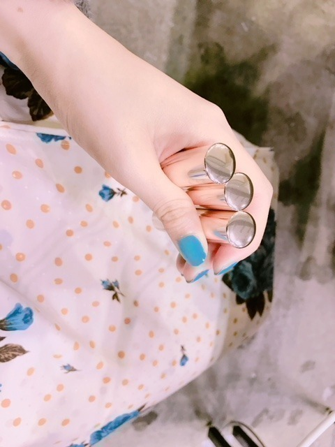

2018/0628Thuストロベリームーンだって
最近は撮影やロケや
歌番組など色々な事をさせていただき
ありがたい事に忙しい日々を送っています。
ありがたいなぁ。。
感謝しながら、私なりに努めていきます！
昨日のテレ東音楽祭も
みてくださった方、ありがとうございました！
音楽番組であまりウインクとか
しないんだけどね。
たまには。。
ふふ
HYさんのAM11:00と
WANIMAさんも聴けて
良かったです。
いい曲♪
すれ違いだけど
なっちゃん、あおいちゃん、める、はなちゃん、ゆかっちに会えて話せましたよん♪
合間は絢音ちんとココア飲んだり
ライブの練習したり
蘭世とみなみとお喋りしたりtwice踊ったり。笑
あと、
若さん まいちゅん 松村さん 井上さんに
ジブリ占いをしてあげたの！
最近の私の特技(｡･ω･｡)
そのあとはレコメン！
なかなか充実した一日でした☺︎
今日も盛りだくさん。
行ってきます〜

Operaのティントリップ
お気に入りすぎて全色持っています。
最近よく使うのは
05coral pink
06pink red
11コズミックピンク
夏だからピンクの気分！
潤うしコズミックピンクはラメも
夏らしくてかわいいの♪
あ、今日は年に一度の満月
ストロベリームーンの日。
恋が叶うんだって。
月ってロマンチック(^-^)
いちごたべたいな...
ではは！
2018/06/28 12:30


コメント(414)
めっちゃ可愛い♥だいすきだよー(^^)/
ストロベリームーンか(=ﾟωﾟ)ﾉ
今日のお昼御飯は、オムライス！
完全に未央奈と乃木中の影響でどうしても食べたくなっちゃてね。でーも自分は、完全に昔ながらのケッチャプオムライス派。
そうか、今日は一年に一回のストロベリームーンかだったね。
叶うかな⁇
テレ東音楽祭
頑張って仕事を終わらせて、観れて良かった！
未央奈 ウィンクが有るなんて！ハぁ〜！
イッパイ良い曲あったね。
心にグッときたり、元気を貰ったり、懐かしいかったり。
最近 忘れてました。
忙しい事に、「ありがとう」を、
大事な事だよね。
頑張らないとね。よし！
thank you 宝物にします。
未央奈は未央奈のままで、
最高の笑顔を！
オペラみおなも使ってるんだ！！
気になってたから今度買ってみようかなあ〜
ウインクばっちり見たよーーっ(｡•̀ω-)☆
ちょくちょくコスメ出てくるの嬉しいし、参考になるなあ〜
写真集のコスメとかボディケアの紹介のとこ、買ってから何回も見てる( ఠ ఠ )♡（笑）
水着とかランジェリー姿のページもこんなスタイルになりたいな〜頑張ろう〜って何回も眺めてるよ！
体壊さないように充実させてね( ⸝⸝ᵕᴗᵕ⸝⸝ )♡
ストロベリームーンって初めて聞きました
なんか…美味しそうな名前ですね笑
自分は今日からテストでした(;Д;)(;Д;)
明日も頑張らねば( ´^`° )
未央奈ちゃんも忙しいようで…
体調に気を付けて頑張ってください✌( ՞ټ՞)✌長くてすいません(〃・д・) -д-))ﾍﾟｺﾘﾝ
ウインク可愛いかったです
メドレーとても良かったです。
昨日のテレ東のみおなすんごい可愛かったよ！
ほんとショートボブにしてからますます可愛い、、笑
お仕事頑張ってね！！
テレ東音楽祭見たよ～堀ちゃんのウインクにドキッとした
ストロベリームーンなんてあるんだね、知らなかった
これから暑くなるから体調管理しっかりしてくださいね ツアーも控えてますからね
テレビ東京は映らないので観れませんでした
未央奈ちゃんのウインク観たかったです
合間に絢音ちゃん達と楽しく出来たみたいで良かったです
ジブリ占いって面白そうですね
それぞれ、どんな結果が出たのでしょうか？
未央奈ちゃん自身を占うとどんな結果が出るのでしょうか？
ツインテールの未央奈ちゃん可愛いですね☺️
ストロベリームーンって響きが良いですよね
またの更新を楽しみにしています☺️
ウインク可愛かった〜
可愛かった
やばかった
ずっと見てたいって思った
ずっと見てたいはやばいですね
すいません！
これからも応援してます
昨日は連続生放送お疲れ様。レコメンって本当に生放送だったんですね、って知ってたよ。笑
おれも音楽祭のウインク見ておおーってなったけど、レコメンで話題になってたね。あれは満点だ、ほりちゃん優勝ね。
ほりちゃんとココアを飲んだ絢音ちん、いい笑顔抜かれてたよ。リラックスして臨めたのかな？みなみは生駒ちゃんのポジションで目立って、蘭世もよく映って良かったよ。
いちごはシーズンオフになっちゃうけど、桃とかブドウとか梨とかこれからどんどん出てくるからいいね。おれは昨日美味しいスモモ食べたんだ、いいだろ。
昨日は、レコメンにテレ東音楽祭お疲れ様。
音楽祭の堀ちゃんのウィンク最高に良かったよ。
また、レコメンの猛暑シリーズリスナーのクオリティが高かったね。ここ最近暑い季節が続いているので体調には気をつけてね。
ウインク気が付きましたよー！(^_-)
昨日のテレ東音楽祭、録画で見たよー！
ウインク最高でした！
かわいかったー。
仲良しほっこりな話しも聞けて嬉しいです。
ジブリ占いって初めて聞きました。
握手会でもできるのかな？笑
超短時間でできるならして欲しいです笑
ストロベリームーン、ロマンチックですね！
月って日にちによって表情が変わるので何か幻想的でいいなーって僕は思います！
ジブリ占いやってほしい...！
ウインクにやられた。
思わず叫んでもーた。
バスラもあって忙しそうだけど頑張れーーー！
3日目全部行きます
テレ東音楽祭のウインクに見事にやられた笑
より一層輝いて見えた未央奈最高だった！
ストロベリームーン食べちゃわないでね
去年のストロベリームーンの日に知り合いの子に月が綺麗ですよってメールしたんですが、月の話題って好意を寄せる人に伝えるものらしく･･･
その子の事好きだったのかなと思い馳せました。
今年は先に言われてしまいましたね(ㅇㅁㅇ;;)
それではまたヾ(▼ω･`)
テレ東の未央奈かわいかった〜
個握取りたくなっちゃったよ
未央奈の頑張ってる姿良いね！！
いつも応援してます！
どこの国の言い伝えでしょう。
レコメンでも言ってたけど、抜かれたカメラ
にウインクとは、本番前に踊ってた位だから
よっぽど調子が良かったんだね。
テレ東音楽祭。忙しい中、よくあれだけメド
レーの構成をやってのけたと思います。
シンクロニシティは、新しい白の衣装の袖口
とスカートがシンクロしてサラサラ動いて、
涼しげで綺麗だったです。
ジブリ占いも初めて聞きました。
動物占いの様に、ジブリのキャラクターに
当てはめていくのかな。
可愛い恰好すると、すぐ１７歳だね。
ほーりー結構映ってましたよね！！ウインクしてたのはやられましたね笑
お仕事も充実してるんですね！これからも応援してます、頑張ってください！！！！✨
更新ありがと(*^^*)
お仕事お疲れさま。
昨日のテレ東音楽祭観ました！
未央奈のウインク可愛すぎてやられました。。
ストロベリームーンの日か…素敵だね(´ｰ｀)
今日のCDTVも観るね！
いつもたくさん頑張ってくれてありがとう。また更新待ってます！
1日が充実してて羨ましいです！楽しむのが1番！！
ライブまであと少しですね！
体には気をつけて頑張ってください！
テレ東音楽祭、見ましたよ！
ウインク、ばっちり決まってましたよよよ！
なんか、他に誰か（違うグループだったかも）もウインクしてたの確認できたんだけど、見切れ直前、恥じらいながらだったので、堀ちゃんのウインクがお見事！って感じました！
なっちゃん、あおいちゃん、める、はなちゃん、ゆかっち
って、多分みんなHKTですよね？
松岡さん、本村さん、田島さん、松岡さん、秋吉さん、ですかねー。
他グループと仲良いところ見ると、なんか嬉しいです！
じゃーね！！
コメントする